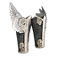

Filters:
Amazonian Anklets

540 Armor
5% Physical Resistance
44% Pierce Resistance
50% Bleeding Resistance
100% Skill Disruption Protection
+350 Health
+20.0 Health Regeneration per second
+100 Defensive Ability
+10% Defensive Ability
+10% Movement Speed
LVL 50, DEX 194, INT 484
Ant Queen's Royal Wraps

440 Armor
100% Pierce Resistance
100% Poison Resistance
25.0% Chance of 450 Bleeding Damage Retaliation over 3.0 Seconds
+75% Bleeding Retaliation
+75% Bleeding Damage
+500 Health
+250 Energy
+100% Energy Regeneration
+35% Movement Speed
Grants Skill : Ant Form
Bonus to All Pets :
+150% Health Regeneration
+150% Energy Regeneration
+15% Total Speed
10% Chance to Dodge Attacks
10% Chance to Avoid Projectiles
LVL 70, DEX 204, INT 590
Brizo's Guidance
208 Armor
30% Pierce Resistance
30% Vitality Damage Resistance
+15% Physical Damage
+10% Movement Speed
+10% Less Damage from Magical
+1 to all skills in Science Mastery
+1 to all skills in Aqua Mastery
Bonus to All Pets :
+10% Total Damage
LVL 29, DEX 108, INT 224
Corrupted Greaves

149 Armor
Difficulty : Epic
24% Bleeding Resistance
24% Life Leech Resistance
6% of Attack damage converted to Health
+15% Movement Speed
+1 to all skills in Chaos Mastery
LVL 43, DEX 142, INT 312
Corrupted Greaves
294 Armor
Difficulty : Legendary
36% Bleeding Resistance
36% Life Leech Resistance
8% of Attack damage converted to Health
+20% Movement Speed
+2 to all skills in Chaos Mastery
LVL 54, DEX 180, INT 424
Croaker's Legs

292 Armor
Difficulty : Epic
+30% Instant Poison Damage
+30% Poison Damage
+10% Movement Speed
Grants Skill : Murkmire Burst (Activated on attack)
Each attack has a chance of sending concentrated bursts of blackened poison at an enemy.
3.0 Second(s) Recharge
3 Projectile(s)
1.0 Meter Radius
80 Poison Damage over 2.0 Seconds
80 Vitality Decay over 2.0 Seconds
10% Chance of:
33% Reduced Damage for 2.0 Seconds
33% Slowed for 2.0 Seconds
40 Instant Poison Damage
LVL 48, STR 150, DEX 300
Croaker's Legs
584 Armor
Difficulty : Legendary
+45% Instant Poison Damage
+45% Poison Damage
+16% Movement Speed
Grants Skill : Murkmire Burst (Activated on attack)
Each attack has a chance of sending concentrated bursts of blackened poison at an enemy.
3.0 Second(s) Recharge
3 Projectile(s)
1.0 Meter Radius
150 Poison Damage over 2.0 Seconds
150 Vitality Decay over 2.0 Seconds
10% Chance of:
44% Reduced Damage for 2.0 Seconds
44% Slowed for 2.0 Seconds
75 Instant Poison Damage
LVL 58, STR 200, DEX 400
Dark Priest's Wraps

352 Armor
35% Bleeding Resistance
50% Vitality Damage Resistance
80% Sleep Resistance
55% Skill Disruption Protection
+40% Vitality Damage
+40% Vitality Decay
+10% Intelligence
+10% Health
+35% Energy Regeneration
+10% Defensive Ability
+20% Movement Speed
Bonus to All Pets :
60 Vitality Damage
LVL 53, DEX 182, INT 490
Dauntless Step
767 Armor
Set : Sovereign of Void
25% Pierce Resistance
25% Elemental Resistance
25% Vitality Damage Resistance
60% Stun Resistance
60% Reduced Petrify Duration
-3.0 Health Regeneration per second
+1.0 Energy Regeneration per second
+110 Defensive Ability
+35% Movement Speed
Grants Skill : March of Death (Activated when equipped)
Allies under your command shall be exceptional in their hardiness, as they deliver unmatched blows in your name.
Cannot be dispelled.
12.0 Meter Radius
+20% Physical Damage
+20% Pierce Damage
+8% Total Speed
LVL 75, STR 688
Death Priest's Step

265 Armor
Difficulty : Epic
50% Vitality Damage Resistance
+15% Movement Speed
+1 to all skills in Necromancy Mastery
+1 to all skills in Lifegiving Mastery
LVL 44, STR 411
Death Priest's Step
579 Armor
Difficulty : Legendary
100% Vitality Damage Resistance
+20% Movement Speed
+2 to all skills in Necromancy Mastery
+2 to all skills in Lifegiving Mastery
LVL 55, STR 558
Dreadwalkers

480 Armor
65% Bleeding Resistance
65% Vitality Damage Resistance
30% Reduction in Life Leech Duration
+60% Bleeding Damage with +33% Improved Duration
+23% Cold Damage
+30 Intelligence
+250 Energy
+28% Movement Speed
+1 to all skills in Necromancy Mastery
Bonus to All Pets :
90 Bleeding Damage over 3.0 Seconds
+20% Bleeding Damage
+20% Cold Damage
LVL 59, STR 190, DEX 464
Earthbrawler Guards
540 Armor
+10% Armor Protection
+10% Armor Absorption
33.0% Chance of 40% Physical Resistance
60% Bleeding Resistance
60% Poison Resistance
20.0% Chance of 220 Damage
+50 Strength
+20% Movement Speed
+2 to all skills in Geomancy Mastery
Grants Skill : Stomp
LVL 67, STR 204, DEX 531
Electrosilk Leggings
208 Armor
25% Pierce Resistance
25% Lightning Resistance
30% Reduction in Electrical Burn Duration
25% Stun Resistance
38 Lightning Retaliation
+15% Lightning Damage
+15% Electrical Burn Damage
+16% Movement Speed
+2 to Electrical Field
Grants Skill : Electrostatic Veil
LVL 36, STR 137, DEX 319
Farstrider Boots

42 Armor
10% Pierce Resistance
10% Elemental Resistance
10% Poison Resistance
+10% Total Speed
+10% Movement Speed
LVL 7, STR 49, DEX 72
Forgotten Boots

147 Armor
10% Elemental Resistance
25% Cold Resistance
10.0% Chance of +130% Bleeding Damage
10.0% Chance of +130% Burn Damage
10.0% Chance of +130% Frostburn Damage
10.0% Chance of +130% Electrical Burn Damage
10.0% Chance of +130% Poison Damage
10.0% Chance of +130% Vitality Decay
+220 Health
+70% Energy Regeneration
+40 Defensive Ability
+24% Movement Speed
+2 to Forbidden Codex
LVL 38, DEX 116, INT 252
Groundbreaker's Step

270 Armor
10% Physical Resistance
60% Stun Resistance
+10% Physical Damage
4% Reduction to Enemy's Health
+38 Strength
+220 Health
+15% Movement Speed
+1 to all skills in Geomancy Mastery
+1 to all skills in Chaos Mastery
LVL 37, STR 462
Ixmucane's Leg Armor
259 Armor
Difficulty : Epic
50 Vitality Retaliation
+15% Movement Speed
5% Chance to Dodge Attacks
LVL 48, STR 515
Ixmucane's Leg Armor
519 Armor
Difficulty : Legendary
75 Vitality Retaliation
+20% Movement Speed
7% Chance to Dodge Attacks
LVL 58, STR 655
Jika-tabi

227 Armor
Difficulty : Epic
+30 Dexterity
+10% Movement Speed
Grants Skill : Dash
LVL 48, DEX 166, INT 413
Jika-tabi
467 Armor
Difficulty : Legendary
+48 Dexterity
+15% Movement Speed
Grants Skill : Dash
LVL 58, DEX 198, INT 513
Legguards of Myriad Dimensions

470 Armor
Set : Journey of Myriad Dimensions
40% Pierce Resistance
60% Poison Resistance
40% Slow Resistance
+10% Intelligence
+85 Defensive Ability
+40% Movement Speed
20% Absorption on Spell Energy
5% Chance to Avoid Projectiles
+2 to Temporal Energy
+2 to Forgotten Knowledge
LVL 61, STR 210, DEX 497
Legguards of the Archiver
260 Armor
60% Stun Resistance
60% Reduced Entrapment Duration
33% Reduced Offensive Ability Retaliation for 3.0 Seconds
+20% Fire Damage
+35% Burn Damage
+20% Lightning Damage
+35% Electrical Burn Damage
+170 Health
+8% Health
+50% Health Regeneration
+30% Energy Regeneration
+25% Movement Speed
LVL 45, DEX 156, INT 396
Legguards of the Furnace

725 Armor
Set : The Hell Furnace
60% Elemental Resistance
40% Vitality Damage Resistance
33% Chance of:
+60% Fire Damage
+60% Burn Damage
+250 Energy
+100 Defensive Ability
+15% Movement Speed
Grants Skill : Furnace Blast (Activated upon taking damage)
Blast nearby opponents with an explosive burst of scorching flames.
10.0 Second(s) Recharge
15 Energy Cost
6.0 Meter Radius
50 Damage
360 Burn Damage over 3.0 Seconds
300 Fire Damage
LVL 62, STR 694
Legs of the Teumessian Fox

240 Armor
Set : The Hunting Paradox
30% Pierce Resistance
25% Bleeding Resistance
25% Poison Resistance
+35 Defensive Ability
+25% Movement Speed
+25% Less Damage from Beasts
+25% Less Damage from Beastmen
LVL 34, STR 134, DEX 309
Moonrise Greaves

424 Armor
+30% Frostburn Damage
+20 Dexterity
-150 Health
+28% Movement Speed
+15% Increased Experience
+2 to Aquamancer's Bounty
+1 to all skills in Time Mastery
LVL 38, DEX 157, INT 351
Naturespeaker's Wraps

36 Armor
Set : Naturespeaker's Outfit
10% Bleeding Resistance
10% Cold Resistance
25.0% Chance of 51 Poison Retaliation over 3.0 Seconds
+30 Energy
+20% Energy Regeneration
+18% Movement Speed
LVL 14, DEX 80, INT 140
Night's Silent Step
445 Armor
Set : Night Eternal
100% Cold Resistance
+75% Frostburn Damage with +50% Improved Duration
+30 Intelligence
+30 Dexterity
+30% Movement Speed
10% Chance to Avoid Projectiles
+130 Damage to Undead
+130 Damage to Ghosts
+15% Less Damage from Undead
+15% Less Damage from Ghosts
+1 to all Skills
Grants Skill : Time Freeze (Activated on attack)
Send a wave of temporal energy that immobilizes enemies in time and space, leaving them open to attacks.
10.0 Second(s) Recharge
94 Energy Cost
3.7 - 4.6 second(s) of Petrify
LVL 70, DEX 206, INT 547
Olympian Greaves

450 Armor
50% Bleeding Resistance
50% Fire Resistance
50% Poison Resistance
30% Chance of :
40 Fire Retaliation
80 Burn Retaliation over 2.0 Seconds
+20% Fire Damage
+20% Burn Damage
+10% Movement Speed
+25% Less Damage from Deities
+1 to Punishment
+1 to all skills in Lifegiving Mastery
LVL 45, STR 447
Path of Ta-Bitjet

240 Armor
20% Cold Resistance
50% Poison Resistance
100 Poison Retaliation over 3.0 Seconds
+40% Poison Damage
+40% Energy Regeneration
+22% Movement Speed
-8% Energy Cost
Bonus to All Pets :
+25% Instant Poison Damage
20 Instant Poison Damage
LVL 36, STR 126, DEX 284
Protectors of the Godly Emissary

265 Armor
35% Pierce Resistance
35% Poison Resistance
50% Stun Resistance
+70% Lightning Retaliation
+70% Lightning Damage
+10.0 Energy Regeneration per second
+75% Energy Regeneration
+25% Attack Speed
+25% Movement Speed
LVL 68, DEX 212, INT 580
Sacral Wind

145 Armor
60% Stun Resistance
60% Slow Resistance
+20% Pierce Damage
+20% Lightning Damage
+150 Energy
+50% Energy Regeneration
+60% Movement Speed
Grants Skill : Break (Activated upon taking damage)
The exquisiteness of the enchanted greaves renders them vulnerable to any attack, losing their potency for the short time it takes for them to repair themselves.
1.5 Second Duration
-60% Movement Speed
LVL 35, DEX 126, INT 286
Scarlet Shinguards
300 Armor
75% Bleeding Resistance
75% Life Leech Resistance
20.0% Chance of 136 Life Leech Retaliation over 3.0 Seconds
+12% Health
+80% Health Regeneration
+15% Movement Speed
LVL 37, STR 467
Si'xoi-orp

594 Armor
Set : Embodiment of Corruption
40% Pierce Resistance
25% Slowed Attack Retaliation for 3.0 Seconds
+60% Burn Damage
+30% Instant Poison Damage
+70 Offensive Ability
+70 Defensive Ability
+20% Attack Speed
+25% Movement Speed
+1 to all Skills
LVL 70, STR 260, DEX 510
Steps of the General

50 Armor
10% Pierce Resistance
10% Vitality Damage Resistance
+13% Attack Speed
+10% Movement Speed
Grants Skill : Undying Fury (Activated upon taking damage)
Reduce all damage taken for a short period of time, continuing on a battle even against all odds.
40.0 Second(s) Recharge
66 Energy Cost
10.0 Second Duration
13% Damage Absorption
31 Armor
+10% Armor Absorption
LVL 9, STR 125
Winged Wanderers

483 Armor
30% Pierce Resistance
50% Bleeding Resistance
+20% Pierce Damage
+40% Poison Damage
+10% Offensive Ability
+10% Defensive Ability
+30% Casting Speed
+27% Movement Speed
LVL 52, STR 177, DEX 454
Zyanya's Shinguards
129 Armor
Difficulty : Epic
+5% Intelligence
-50 Health
-5% Health
+50 Defensive Ability
+20% Movement Speed
LVL 48, DEX 170, INT 395
Zyanya's Shinguards
259 Armor
Difficulty : Legendary
+5% Intelligence
-75 Health
-5% Health
+80 Defensive Ability
+30% Movement Speed
LVL 58, DEX 206, INT 499